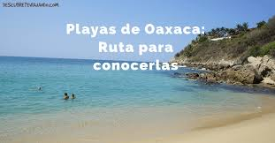

Surf Puerto Escondido
Puerto Escondido Oaxaca Puerto Escondido, o “Puerto” de cariño, es uno de los destinos de playa más reconocidos de México, y del estado de Oaxaca, su ambiente relajado invita a desconectarse del agitado ritmo de la vida cotidiana y adoptar una postura desinhibida y ligera para abrirnos al mundo y ser más tolerantes con nosotros mismos y con los demás.
¿Sabías que Puerto Escondido es uno de los mejores destinos de surf a nivel mundial?
Clima en Puerto Escondido
Puerto escondido tiene un clima tropical muy agradable todo el año con una temperatura promedio de 27.3°C.
Mayo es el mes más cálido con un promedio de 28.6 °C y el mes más “frío” del año es diciembre con una temperatura de 26.0 °C en el medio de diciembre.
La temporada de lluvias va de mayo a octubre. Marzo es el mes más seco y agosto el més en el que más llueve.
 |
 | |
Tips para visitar Puerto Escondido Oaxaca
Mantén una actitud abierta y desinhibida, déjate enganchar por el particular estilo surfer y hospédate cerca de las actividades que quieres hacer. Si tienes coche visita algunas de las playas y atractivos un poco más lejanos y si lo necesitas muévete en taxis locales, pero antes pregunta la tarifa y revisa que te parezca adecuada. En ocasiones hay buenas fiestas y eventos, sobre todo en temporadas vacacionales pregunta en los bares y restaurantes por la oferta emergente.
El equipamiento basico para visitar cualquier playa
|
Además del equipamiento básico de viaje
|